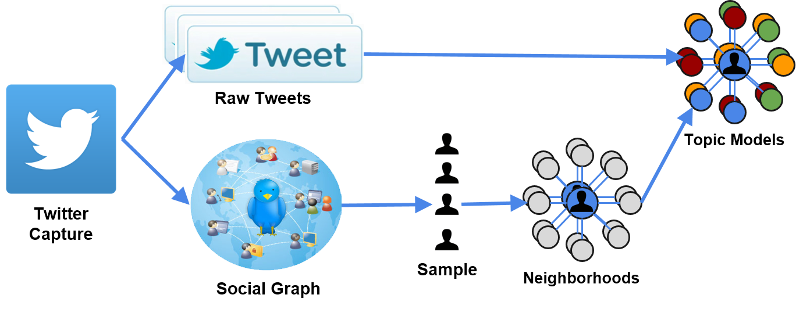

Introduction:
Topic modeling is a technique that allows researchers to quantitatively find correlations between words in a corpus, in order to unearth the overarching themes in said corpus. For example, it makes intuitive sense that religious documents would include words referencing religious topics: god, sacrifice, etc. Topic modeling algorithms would allow a theologian to mine those documents for these themes, uncovering them quickly and without human error.
In the context of social networks, topic modeling can be useful in terms of elucidating network structure based on shared interests, or homophily. Homophily between players in a social network has been measured in a multitude of ways. For example, in order to understand the patterns of collaboration between academics at Stanford University over time, Dahlander and McFarland used similarity measures to correlate their co-citations with status variables: gender, age, ethnicity, and tenure status. They found that homophily was a major driver of collaborations between academics (Dahlander and McFarland 2013). Topic modeling, however, affords another potential facet for analysis. Instead of measuring homophily using demographic features, topic modeling can be used to determine whether shared topic interests influence bonds in social networks. For example, are people who are friends on Facebook more likely to post about similar topics, in terms of politics, musical taste, etc?
The Twitter network provides a novel social landscape in which to measure homophily. Created in 2006, Twitter is a platform for sharing information using messages of 140 characters or less. Twitter users can form ties by ‘following’ each other, receiving updates on the tweets of their network members, and sharing their own tweets with their network. The question thus arises: does social network theory regarding homophily hold true in the Twitterverse? Do ties on twitter mean that users share common interests, i.e. do they tweet about the same topics as their connections do? We aim to answer this question by using Latent Dirichclet Allocation, or LDA, which is a popular algorithm for topic modeling, to determine the most frequent topics that Twitter users tweet about. We will then compare each user’s most frequent topics with those of their neighbors in order to confirm or deny the existence of homophily in the Twitterverse. We expect to see considerable homophily between a user and the members of their one-hop network.
Methods:
Data and Sampling:
We will use the SNAP Twitter dataset from Stanford for the project. The dataset contains a sample of 476 million tweets from roughly 17 million users from June to December of 2009. Since topic models such as LDA work with a corpus of documents, we will transform the set of tweets into documents by aggregating them per user to create user documents. Rather than performing topic modeling over a corpus representing the entire dataset, we will work on a subset of the data determined as follows. We will first limit ourselves to users that have at least 100 tweets and 10 neighbors - where a neighbor is either a follower or a followee. From this subset of users, we will randomly sample 100. For each of these 100 users, we will then proceed to randomly sample about 10 neighbors, for an upper bound of 1100 unique sampled users. Finally, for each user in this final sample list, we will randomly sample 100 of their tweets from the SNAP dataset to create the corpus on which we will perform topic modeling (LDA).
LDA
Latent Dirichlet Association, or LDA, is a topic model used to discover abstract topics that appear in a collection of documents. It is a generative model in which each document is viewed as a finite mixture over an underlying set of topics and each topic in turn is represented as a multinomial probability distribution over words. The appearance of each word in the document can thus be attributed to one of the document’s topics. Using LDA, we can obtain the top topics in the Twitter corpus as well as information about how frequently each user tweets about each topic. We use this frequency to determine which topics a user is interested in. We will not be implementing LDA ourselves, instead choosing to use the Python package lda. For this to be effective, we need to be careful about how we choose to preprocess the messy Twitter data. We plan to remove non-English tweets, hashtags and stop words, and stem the remaining words using the Porter stemmer from Python’s nltk toolkit.

Measuring Homophily
Once we have each user’s most frequent topics, we will measure homophily between a user and a neighbor by first taking the top three topics of the user and then checking to see if the neighbor’s top three contains at least one of these topics. If it does, we can count this as +1 for homophily; if it doesn’t, we don’t count it at all. After analyzing all of the user’s neighbors we will have a fraction homophily_proportion = total_neighbors_with_homophily / total_neighbors. After performing this algorithm on every user in our network, we can average all users’ homophily_proportions and get a single fraction which will represent the average measure of homophily across the entire network. We can then say something like: “if the average measure of homophily is < 0.5, we can conclude that users tend to tweet about topics that are different than their neighbors.
Visualization:
We will visualize the results by using egocentric networks (egonets hereafter). Given one of the initially sampled users and its 10 neighbors, a topic’s prevalence in the egonet can be depicted by assigning the topic in question a color and consequently coloring nodes in the egonet with a color intensity proportional to how prevalent the topic was in the node’s document. We hope to find that users with high color intensity for some topic A will also have neighbors with relatively high color intensity for the same topic.